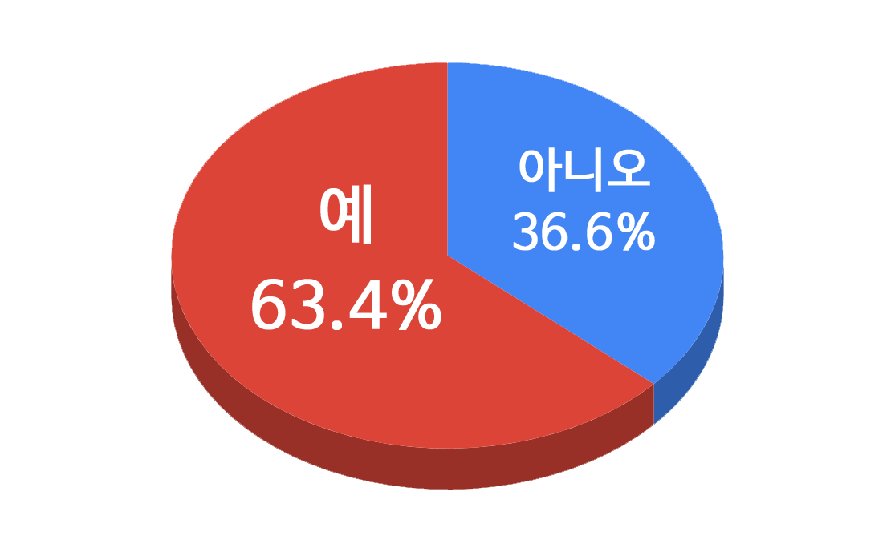
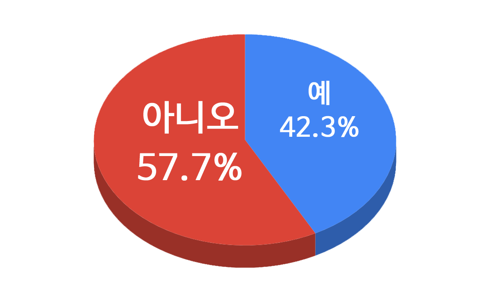
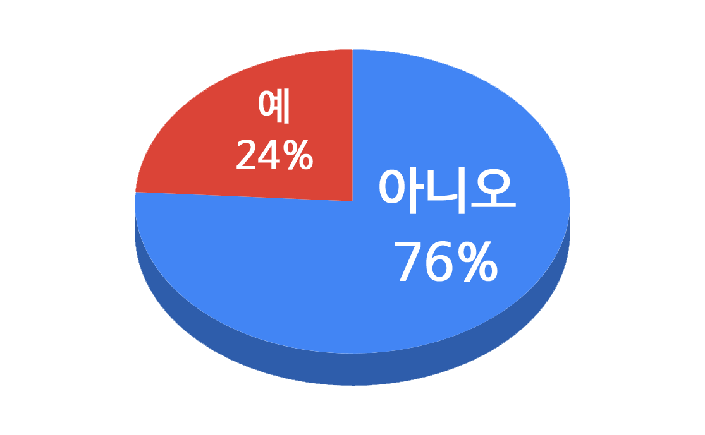
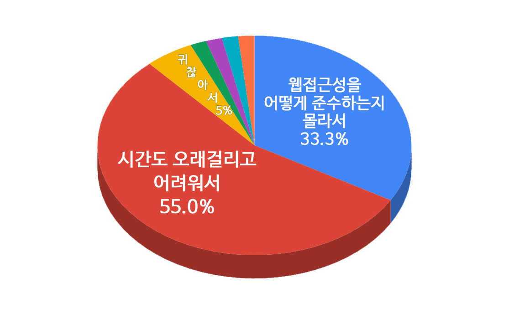

멀더끙
現 콘텐츠연합플랫폼(주) 퍼블리셔
現 ‘정보접근성 포럼’ 표준분과 회원
‘예제로 살펴보는 WAI-ARIA’ 집필진
What is, Why, How?
총 응답자 : 164명
웹 페이지 제작 시, 기본적으로 웹 접근성을 준수하도록 제작 하고 계신가요?
웹 접근성 준수가 잘 되었는지 평가를 진행하시나요?
각 유형별 장애를 가진 이들 모두가 내가 만든 사이트를 충분히 이용할 수 있을 것이라 기대하십니까?
여기서 잠깐!
W3C Validator로 검증을 해보거나, 스스로 코드 리뷰를 거치지 않은 HTML문서는 웹표준을 준수했다고 신뢰할 수 있는가?
접근성 평가를 하지 않은 웹 페이지는 웹 접근성을 충분히 제공한다고 신뢰할 수 있는가?
실질적으로 접근성을 충분히 제공하고 있다고 추정 가능
8.48%
웹 접근성을 기본 제공으로 두지 않는 이유는 무엇인가요?
많은 부분 간과 하는 것.
Web Content Accessibility Guidelines
Web Content + Access + Ability
웹 콘텐츠에 접근할 수 있는 능력
Web accessibility means that people with disabilities can perceive, understand, navigate, and interact with the Web, and that they can contribute to the Web. W3C - Introduction to Web Accessibility
우리 사이트는 장애인이 이용 안하는데요?
안하는게 아니라 못하는 것
접근성을 제공하지 않음
누군가는 사용하지 못하는 소외 당하는 결과
웹 접근성으로 얻을 수 있는 benefit
2017년 「취약계층 정보접근성 제고를 위한 정책방안」
perceive , understand , navigate , interact
Not Technology
Need to Understand
인식 => 감각에 의해
특정 감각에 의존되지 않아야 함
=> 이미지 콘텐트에는 대체 텍스트가 제공되어야 한다.
=> 그 의미나 용도를 동등하게 인식할 수 있도록 적절한 대체 텍스트를 제공해야 한다.
이해될 수 있어야
=> 콘텐츠 논리성
=> 콘텐츠는 논리적인 순서로 제공 해야 한다.
<ul>
<li>
<label class="a11y-hidden" for="passwordCheck">비밀번호 확인</label>
<input type="password" maxlength="20" name="passwordCheck"
id="passwordCheck" placeholder="비밀번호 확인">
<span class="form-guide" id="pwdToolTip">
비밀번호는 영문 대소문자, 숫자, 특수문자(.!@#$%)를 혼합하여
8~20자로 입력해주세요
</span>
</li>
</ul>탐색이 용이해야
=> 쉬운 내비게이션
=> 콘텐츠의 반복되는 영역은 건너뛸 수 있어야 한다.
사용할 수 있어야
=> 입력 장치의 접근성
=> 키보드에 의한 초점은 논리적으로 이동해야 하며 시각적으로 구별할 수 있어야 한다.
한번에 다 할 수는 없다. 하지만 개선에 개선을 거듭하면 좋은 접근성이 갖춰지지 않을까?